Escolher o tema
Olha o catálogo e as áreas com menos material e sorteia: 70% Pesquisa, 30% Livro.
plannercatálogo · fila de temas→brief: tema, ângulo, 1 achado
Uma rotina que roda sozinha e entrega, de cada vez, um material novo: ideias, artigo, imagens e um vídeo por ideia em PT e EN.
As rodadas de 08/11 e 11/11 travaram no primeiro comando, esperando uma permissão que ninguém deu. O último material publicado foi "treinar perto da falha" (04/11). Conserto: deixar a tarefa em modo sem permissão (Bypass) na tela de tarefas agendadas.
Cada passo tem um dono, uma ferramenta e uma saída. Reprovou num portão: volta uma vez; reprovou de novo, aquela parte não sai.
Olha o catálogo e as áreas com menos material e sorteia: 70% Pesquisa, 30% Livro.
8 a 12 fatos com fonte primária, as ressalvas, e quantos achados independentes o tema sustenta.
Primeiro as ideias (uma por padrão), depois o artigo. PT e EN escritos lado a lado.
Checklist editorial, e um leitor apressado que vê só o título, ou só o verso, e diz do que trata.
Capa 2:3 e uma imagem 4:5 por ideia, sem texto. O leitor cego confere que a imagem não puxa pra outro assunto.
Cada fala vira uma cena. Antes de gastar voz, faz uma prévia muda dos quadros.
Fiel ao corpo da ideia, sem número de pesquisa, sem marca, termina no que fazer.
Grava cada fala e o Gemini ouve de volta. Faltou palavra, regrava (até 4 vezes).
3 quadros por fala. O revisor descreve o que vê sem ler a legenda, depois compara com a fala.
MP4 em PT e EN (~2 MB cada) com pôster, direto pro bucket do app.
Duas migrations (texto, depois ideias e mídia) num só envio ao banco, com a conferência antes. Commit no main.
Um orquestrador chama cada especialista na ordem. Nenhum revisor reescreve: ele aponta, quem escreveu conserta.
O maestro. Segue o roteiro dos 11 passos, controla os limites e escreve o relatório.
Escolhe o tema: área com menos material, tema popular ou estudo recente.
Monta o dossiê. Prefere meta-análise e fonte primária; diz "não consegui confirmar" em vez de inventar.
Escreve as ideias e o artigo, com o registro do raciocínio pra auditoria.
Checklist editorial com regra por ideia. Devolve falha ou aviso, nunca reescreve.
O leitor apressado. Vê uma superfície por vez (título, verso ou imagem) e diz do que acha que se trata.
Transforma o pedido de imagem de cada ideia no prompt que vai pro Gemini.
Escreve o roteiro: falas, cenas, peças, lugares e a protagonista do vídeo.
Dois modos: lê o roteiro antes da voz e os quadros antes do render.
Rotina à parte: o áudio de aprofundamento pelo Gemini Notebook, no Chrome.
Tudo roda nesta máquina: as chaves de API e o Supabase CLI só existem aqui, e por isso a rotina é local.
Banco (catálogo, migrations) e o bucket learning-media, onde ficam imagens e vídeos.
Imagem 3.1 (capa e cards), voz Kore (TTS) e o ouvido do QA, que transcreve a voz de volta.
O vídeo é código React em tools/video. O roteiro JSON vira cenas, e cada cena é desenhada quadro a quadro.
O comando do vídeo: lint → build → voice → stills → render → upload.
Gera capa e imagens a partir do pedido de imagem de cada ideia.
Escreve o SQL a partir dos arquivos aprovados. Ninguém escreve SQL de conteúdo à mão.
Barra o que é regra mecânica: tamanho, campos, fontes, imagem sem texto.
Corta, mede e mascara os quadros (a legenda tapada pra leitura cega).
Vozes brasileiras pra alternar entre vídeos. Já está ligada no molde, mas ainda não na rotina.
O vídeo só conta o que está no corpo da ideia. A pauta sai dele: cada frase que ensina algo vira uma fala.
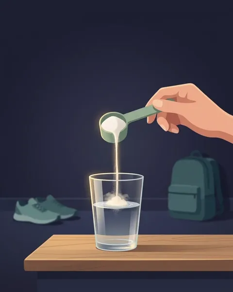
| # | Fala (PT) | Cena | O que a tela demonstra |
|---|---|---|---|
| 1 | Creatina é só pra quem faz musculação, e tem que ser antes do treino? o gancho junta os dois mitos que o corpo derruba | pensa · cozinha | ela no balcão, o pote, o relógio: a dúvida |
| 2 | …guarda no músculo, onde ela vira fosfocreatina, a reserva de energia dos esforços curtos e intensos. | dentro · corpo | o tanque de grãos dentro do músculo |
| 3 | …quando o esforço se repete, como em tiros de corrida, saltos e séries de força. | faz · parque | ela correndo de frente, o tanque gastando |
| 4 | Então não é só pra musculação, ajuda em arrancadas curtas e fortes. | faz · parque | figurantes em esforços diferentes |
| 5 | E os benefícios vão de adolescentes a idosos. | faz · academia | um adolescente e uma idosa treinando, um em cada ponta, com o nome em cima |
| 6 | Ela é segura pra pessoas saudáveis, sem efeitos colaterais graves. | faz · cidade | ela andando na rua, o rótulo da palavra |
| 7 | Dose a dose, o músculo vai guardando até a reserva encher em algumas semanas. | cena · cozinha | lupa no tanque enchendo e o calendário passando |
| 8 | Não precisa tomar antes do treino, porque o efeito vem do estoque cheio. | dentro · corpo | o tanque cheio, não a hora da dose |
| 9 | Misture na água, no suco ou no shake. | cena · mesa | os três copos, cada um com o nome |
| 10 | Tome três a cinco gramas de creatina todo dia, em qualquer horário, para manter o estoque do músculo cheio. | cena · cozinha | o verso demonstrado: ela toma, o relógio solto, o tanque cheio. Sem o card no fim |
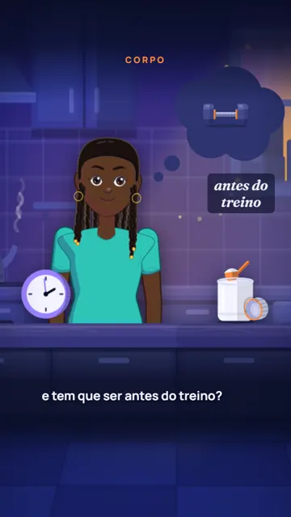
01 · ganchoo mito na cabeça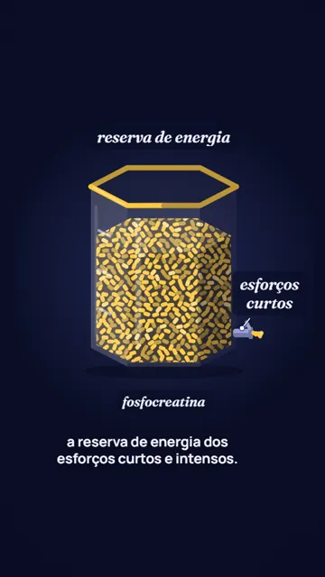
02 · por dentroa reserva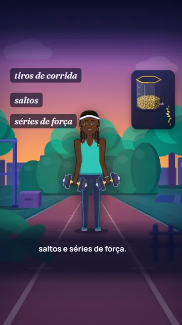
03 · faztiros, saltos, força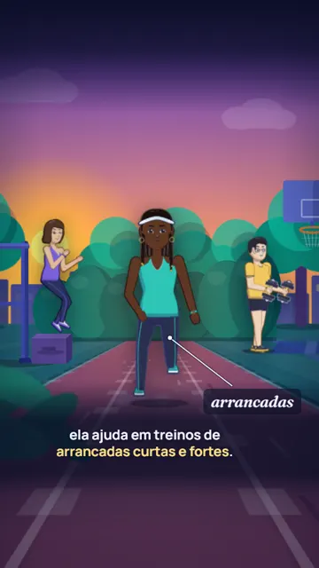
04 · fazarrancadas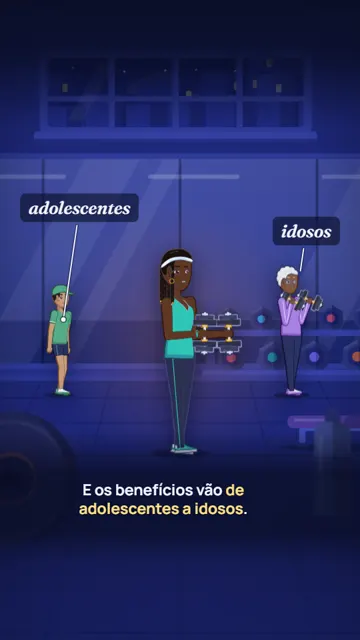
05 · fazde adolescentes a idosos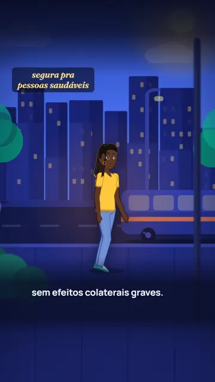
06 · fazsegura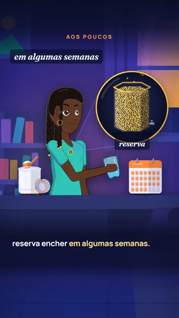
07 · cenaalgumas semanas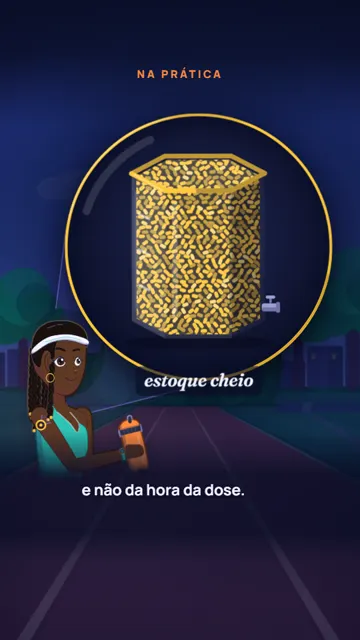
08 · por dentroestoque cheio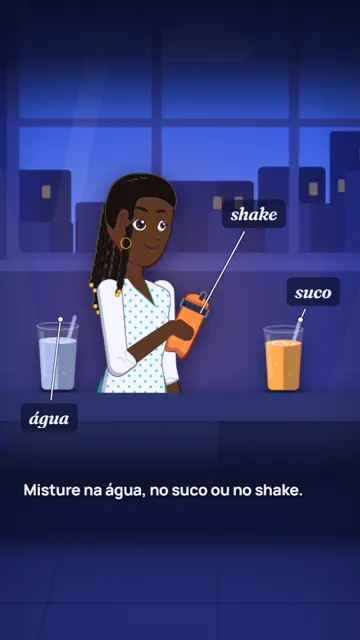
09 · cenaágua, suco, shake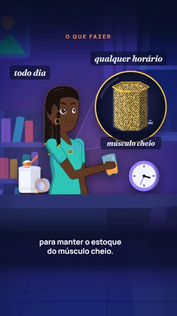
10 · fimo verso feitoCada portão tem regras curtas e um dono. O que dá pra medir, o lint barra; o resto, um revisor lê.
Nenhuma imagem do vídeo é gerada por IA: tudo é desenho em código, em camadas, e cada fala do roteiro liga peças da cena.
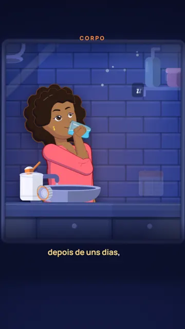
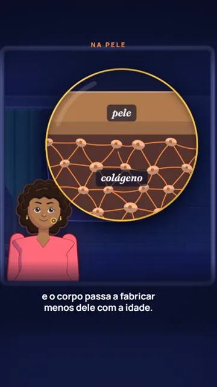
O lado da direita foi aprovado nos três vídeos da Paker e vive no branch feat/boneco-v5. Falta levar pra rotina.
ElevenLabs no modelo eleven_v4, idioma travado em português, sem exagero de estilo, o roteiro numa tomada só. Está em tools/video/vozes.json; no molde: voice --voz lendario.
O que já foi escolhido e não se rediscute sem motivo novo.
O planner consulta três coisas no banco: os materiais publicados (os 80 mais recentes), quantos materiais cada uma das 12 áreas tem, e a fila de temas sugeridos (material_topic_seed). A partir disso ele sorteia, de propósito, pra não ficar previsível: 60% das vezes cobre a área com menos material, 30% aprofunda uma área popular, 10% traz um estudo recente (sempre escrito pra durar, nunca "saiu essa semana"). Um tema da fila com prioridade 8 ou mais passa na frente.
Ele devolve um brief com a categoria (Pesquisa ou Livro; Fundamentos só por pedido seu, via /content-drop), o ângulo em PT e EN, o teto de ideias da categoria e um achado principal. Uma lista de três rótulos fazia todo material sair com três ideias; por isso ele só dá um.
O researcher busca 8 a 12 fatos com número e citação completa (autores, revista, ano), preferindo meta-análise, diretriz de agência de saúde e estudo de referência. Separa humano de camundongo, sinaliza o que é contestado (ex.: auditoria do "Why We Sleep") e nunca inventa: o que não confirma, diz que não confirmou.
No fim ele conta os achados independentes: dois achados só são independentes se diferem no estudo, no mecanismo ou na ação que pedem. Começa assumindo um. Menos de 5 fatos sólidos = a rodada aborta.
O drafter escreve as ideias primeiro e depois o artigo, cujas seções são exatamente as ideias, na mesma ordem. Cada ideia tem título de até 48 caracteres que nomeia o assunto, verso de até 140 caracteres (a resposta usável), corpo de 100 a 180 palavras, um pedido de imagem sem texto e 1 a 3 fontes.
O reviewer roda o checklist e devolve falhas com regra, lugar e sugestão. Depois, o leitor cego (Haiku, de propósito: um modelo forte adivinha contexto que uma pessoa rolando o feed não adivinha) recebe uma superfície por vez. O orquestrador compara a resposta dele com a ideia. Reprovou: volta ao drafter uma vez; reprovou de novo, a rodada não publica.
O art-director transforma cada pedido de imagem em prompt pro Gemini 3.1 Flash Image, com referências de estilo. O leitor cego lê o prompt antes de gerar (custa quase nada) e a imagem pronta depois. Só reprova quando puxa pra outro assunto. Cada imagem pode ser refeita uma vez; a segunda falha sai assim mesmo e vai pro relatório.
Por fim o orquestrador compara título e imagem lado a lado (o "trio"): os dois podem passar sozinhos e mesmo assim contar coisas diferentes. Foi o caso do aperto de mão × agachamento.
O video-director lê a ideia aprovada, acha a história no corpo (a tensão, o que pesa, o que muda, o que fazer), tira a máquina do estudo e escolhe uma cena por fala a partir do repertório: faz quando ela faz um esforço, dentro quando algo entra no corpo e vai pra algum lugar, cena com lupa quando é um tecido de perto, caderno → mapa quando o método é anotar. Ele escolhe a protagonista (diferente das 3 últimas), os lugares e a assinatura por dentro (diferente do vídeo anterior), roda o lint e faz uma prévia muda.
O video-reviewer lê o roteiro antes da voz. Aprovado, o molde grava a voz fala por fala e o Gemini transcreve de volta. Depois o molde tira 3 quadros por fala, e o revisor faz duas leituras: às cegas, com a legenda tapada, descreve o que vê; só então compara com a fala e passa a régua da fase 3. Há um conserto guiado, feito pela tela sempre que der (trocar a fala custa regravar). Vídeo acima de 60 s conta como falha. Ideia que não passa sai sem vídeo, e o texto nunca espera o vídeo.
Tudo sobe pro bucket antes do SQL, pra o app nunca apontar pra arquivo que não existe. As duas migrations vão num único db push, mas só depois de um dry-run que lista exatamente as duas. O banco casa migration só pelo número, e outra sessão pode ter usado o mesmo número no meio da rodada. Depois do envio, o publisher confere no banco o nome das versões, as ideias, as imagens, a capa e os vídeos.
Falhas que param a rodada: sem chave do Gemini, sem tema, pesquisa rala, texto reprovado duas vezes. Falhas que não param: imagem, capa ou vídeo que falharam (o material sai sem eles e o relatório lista). E uma que trava tudo em silêncio: a rotina esperando permissão, como em 08/11 e 11/11.
.claude/agents/ learning-publisher-remotion.md o maestro (os 11 passos) learning-planner.md · learning-researcher.md learning-drafter.md · learning-reviewer.md · learning-card-tester.md learning-art-director.md learning-video-director.md · learning-video-reviewer.md learning-drops/ ideas-specs/<slug>.json o texto das ideias (o que você lê) media-specs/<slug>.json os prompts das imagens video-specs/<slug>.json o roteiro do vídeo tools/video/ MOLDE.md cenas, lugares, peças, regras scripts/molde.mjs lint · build · voice · stills · render · upload vozes.json o elenco de vozes src/molde/ · src/boneco/ as cenas e o boneco em código tools/content-media/ generate.mjs · emit-migration.mjs ~/.claude/scheduled-tasks/ learning-publisher-remotion-cron (dom/qua 10:00)
Atualizado em 11/11/2026. Quando mudar uma regra, esta página muda junto.